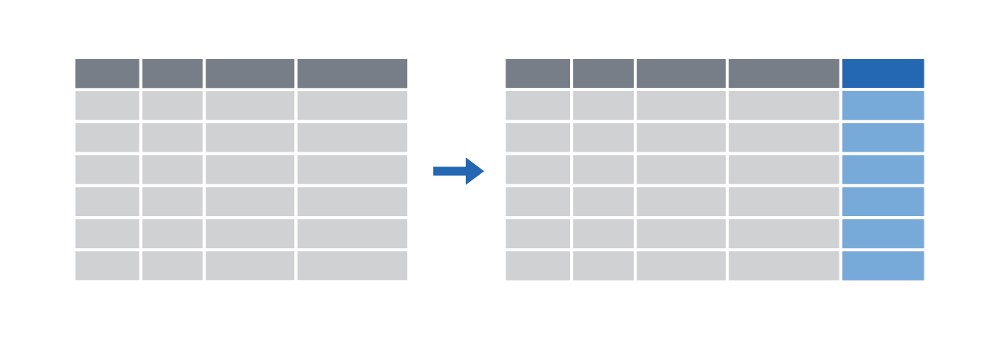
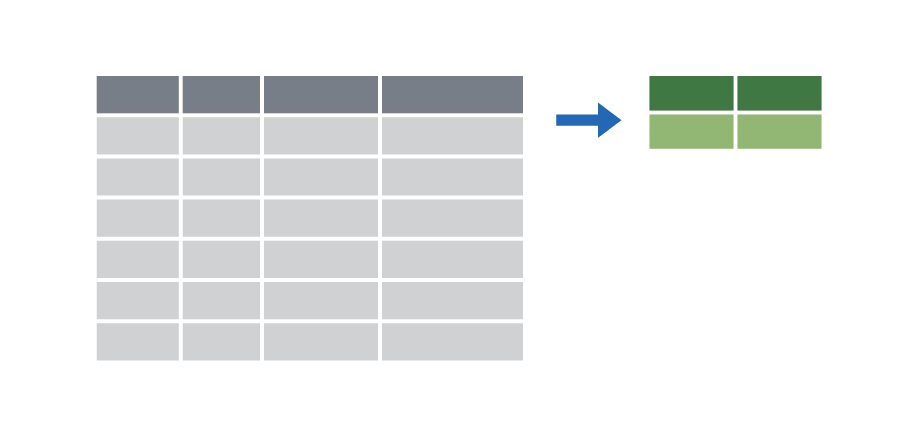
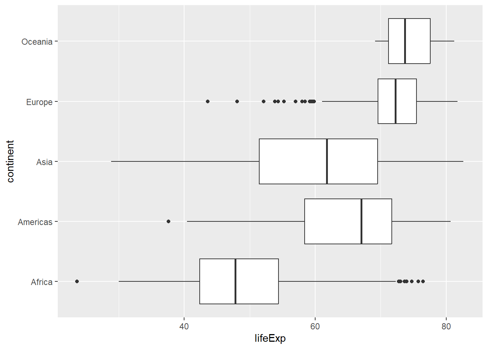

Introducción a R y RStudio
Taller I
- La idea es crear un taller con esto. Vamos a ver!*
Preliminares
Introducción
El objetivo de este taller es introducirlos a R y RStudio, que utilizarán a lo largo del curso tanto para aprender los conceptos estadísticos discutidos en el libro de texto como para analizar datos reales y llegar a conclusiones informadas. Para aclarar la diferencia entre ambos: R es el nombre del lenguaje de programación en sí, y RStudio es una interfaz conveniente. Como analogía:
- R es como el motor de un coche.
- RStudio es como la carrocería.
Sean pacientes con R y con ustedes mismos

Instalación de R y RStudio
Si han utilizado R o RStudio antes, les recomiendo desinstalar las versiones antiguas e instalar la última versión de R y RStudio, ya que algunos paquetes que instalaremos podrían no ser compatibles con versiones anteriores de R.
Vean los siguientes videos de OpenIntro Statistics para un tutorial de:
o pueden simplemente sequir las instrucciones a continuación:
1. Instalen la última versión de R
Descarguen el archivo de instalación aquí para…
2. Instalen el último RStudio
RStudio proporciona un entorno de trabajo más amigable para R.
Descarguen RStudio Destkop. Instalenlo seleccionando la instalación dependiendo de su sistema operativo.
3. Ambiente de RStudio
El interfaz de RStudio consiste en diferentes ventanas como se ve en el siguiente gráfico.
Editor (sección superior izquierda): esta sección es fundamental para la reproducibilidad del código. Este editor permite guardar el código para que sea usado en futuras ocasiones. El código puede ser ejecutado en esta sección posicionando el cursor de texto al final de la línea de código que se ejecutará; otra opción es seleccionando la misma y empleando el comando Control+Enter para Windows o Command+Enter para Mac.
Entorno (sección superior derecha): en esta sección se pueden visualizar los objetos y funciones creados o importados en la sección de R. Objetos como vectores, matrices, arreglos, data frames, listas, objetos tipo ggplot, entre otros.
Consola (sección inferior izquierda): esta sección es donde se ejecuta el código. No solo se ejecuta el código que escrito en el editor, sino que también el código puede escribirse y ejecutarse aquí directamente presionando Enter. Sin embargo, cuando el código se ejecuta directamente en la consola, este no se almacena y cuando se cierra la sesión de R este se pierde.
Visualizador (sección inferior derecha): en esta sección se pueden visualizar los archivos en “Files”, los gráficos en “Plots”, los paquetes que ya están instalados en “Packages”, la ayuda de R con información de los paquetes y el funcionamiento en “Help”, y páginas web en “Viewer”.
Algunos recursos de utilidad
Existen muchos recursos para empezar a programar en R. Esta sección se basa en material principalmente de esta introducción y de Getting Started en Data Visualization de Kieran Healy.
Algunos fundamentos básicos
- Las funciones son (usualmente) verbos, seguidos por los objetos a los cuales serán aplicados:
haz_esto(a_esto)
haz_esto(a_esto, a_aquello, con_esto)- Existen muchos paquetes (libraries) que se instalan para expandir las funciones estándar de R. Se instalan con la función
install.packagesy el nombre del paquete entre comillas. Siempre que se inicie una sesión en R se deben cargan con la funciónlibrarysin comillas.
install.packages("package_name")
library(package_name)Iniciando un proyecto
El directorio de trabajo
Su directorio de trabajo es la carpeta en su computadora en la que están trabajando actualmente. Cuando le piden a R que abra un archivo determinado, buscará ese archivo en el directorio de trabajo, y cuando le indiquen a R que guarde un archivo de datos o una figura, lo guardará en el directorio de trabajo.
Antes de empezar a trabajar, por favor establezcan su directorio de trabajo en la carpeta donde se encuentra almacenado su archivo de datos de la siguiente manera:
1. Mediante el comando setwd()
setwd("C:/Users/nombre_apellido/OneDrive/Documentos/analisis_de_datos/")2. Manualmente desde el visualizador de archivos
Primero, van al panel [Files] en la parte inferior derecha.
Luego en la parte derecha, dan click en ... que es “go to directory”.
Seleccionen la carpeta donde van a tener sus archivos. El directorio deberá aparecer en [Files].
Seleccionen la tuerca en [FILES] y establezcan la carpeta como directorio de trabajo.
Cargar datos a R
Existen diferentes maneras de cargar datos a R:
- Algunos paquetes incluyen sus propias bases de datos. Por ejemplo:
Warning: package 'tidyverse' was built under R version 4.1.3Warning: package 'tibble' was built under R version 4.1.3Warning: package 'forcats' was built under R version 4.1.3-- Attaching core tidyverse packages ------------------------ tidyverse 2.0.0 --
v dplyr 1.1.4 v readr 2.1.5
v forcats 1.0.0 v stringr 1.5.1
v ggplot2 3.5.1 v tibble 3.2.1
v lubridate 1.9.3 v tidyr 1.3.1
v purrr 1.0.2
-- Conflicts ------------------------------------------ tidyverse_conflicts() --
x dplyr::filter() masks stats::filter()
x dplyr::lag() masks stats::lag()
i Use the conflicted package (<http://conflicted.r-lib.org/>) to force all conflicts to become errorslibrary(gapminder)Warning: package 'gapminder' was built under R version 4.1.3str(gapminder)tibble [1,704 x 6] (S3: tbl_df/tbl/data.frame)
$ country : Factor w/ 142 levels "Afghanistan",..: 1 1 1 1 1 1 1 1 1 1 ...
$ continent: Factor w/ 5 levels "Africa","Americas",..: 3 3 3 3 3 3 3 3 3 3 ...
$ year : int [1:1704] 1952 1957 1962 1967 1972 1977 1982 1987 1992 1997 ...
$ lifeExp : num [1:1704] 28.8 30.3 32 34 36.1 ...
$ pop : int [1:1704] 8425333 9240934 10267083 11537966 13079460 14880372 12881816 13867957 16317921 22227415 ...
$ gdpPercap: num [1:1704] 779 821 853 836 740 ...- La otra manera es descargando el archivo y guardarlo en el directorio de trabajo que ya establecieron. Los archivos se importan a R usando una función que dependerá del tipo de archivo que van a importar.
nombre_datos <- read.csv("nombre_del_archivo.csv")Revisen acá para una explicación más detallada.
Una mirada a los datos
Podemos ver los datos escribiendo el nombre de los datos:
gapminder# A tibble: 1,704 x 6
country continent year lifeExp pop gdpPercap
<fct> <fct> <int> <dbl> <int> <dbl>
1 Afghanistan Asia 1952 28.8 8425333 779.
2 Afghanistan Asia 1957 30.3 9240934 821.
3 Afghanistan Asia 1962 32.0 10267083 853.
4 Afghanistan Asia 1967 34.0 11537966 836.
5 Afghanistan Asia 1972 36.1 13079460 740.
6 Afghanistan Asia 1977 38.4 14880372 786.
7 Afghanistan Asia 1982 39.9 12881816 978.
8 Afghanistan Asia 1987 40.8 13867957 852.
9 Afghanistan Asia 1992 41.7 16317921 649.
10 Afghanistan Asia 1997 41.8 22227415 635.
# i 1,694 more rowsNombremos la base de datos para que aparezca en el espacio de trabajo (Environment). Pueden ver las dimensiones de los datos con el siguiente código:
gapminder <- gapminder
dim(gapminder)[1] 1704 6Este comando debería mostrar [1] 1704 6, indicando que hay 1704 filas y 6 columnas (el [1] lo explico más adelante), tal como se indica al lado del objeto en tu espacio de trabajo. Puedes ver los nombres de estas columnas (o variables) escribiendo:
names(gapminder)[1] "country" "continent" "year" "lifeExp" "pop" "gdpPercap"Una ventaja de RStudio es que viene con un visor de datos incorporado. Haz clic en el nombre gapminder en el panel de espacio de trabajo (ventana superior derecha) que enumera los objetos en tu espacio de trabajo. Esto abrirá una visualización alternativa del conjunto de datos en el Visor de Datos (ventana superior izquierda). Puedes cerrar el visor de datos haciendo clic en la ‘x’ en la esquina superior izquierda.
Podemos acceder a una sola variable de un marco de datos utilizando la notación del signo de dólar $. Por ejemplo, el siguiente comando
gapminder$continent %>%
head(5)[1] Asia Asia Asia Asia Asia
Levels: Africa Americas Asia Europe OceaniaTransformar datos con dplyr
El tidyverse
Los verbos del dlpyr
Extract rows with filter() |
 |
Extract columns with select() |
 |
Arrange/sort rows with arrange() |
 |
Make new columns with mutate() |
 |
Make group summaries with group_by() |> summarize() |
 |
filter
filter(.data = DATA, …)
- DATA = Data frame to transform
- … = One or more tests
.filter()returns each row for which the test is TRUE.
De la base original:
| country | continent | year |
|---|---|---|
| Afghanistan | Asia | 1952 |
| Afghanistan | Asia | 1957 |
| Afghanistan | Asia | 1962 |
| Afghanistan | Asia | 1967 |
| Afghanistan | Asia | 1972 |
| … | … | … |
Podemos seleccionar
filter(.data = gapminder, country == “Denmark”)
| country | continent | year |
|---|---|---|
| Denmark | Europe | 1952 |
| Denmark | Europe | 1957 |
| Denmark | Europe | 1962 |
| Denmark | Europe | 1967 |
| Denmark | Europe | 1972 |
| Denmark | Europe | 1977 |
Símbolos Lógicos
| Test | Meaning | Test | Meaning |
|---|---|---|---|
x < y |
Less than | x %in% y |
In (group membership) |
x > y |
Greater than | is.na(x) |
Is missing |
== |
Equal to | !is.na(x) |
Is not missing |
x <= y |
Less than or equal to | ||
x >= y |
Greater than or equal to | ||
x != y |
Not equal to |
Ejercicio
Utilicen filter()y los condicionales para mostrar:
- Los datos para Canadá
- Todos los datos para los países de Oceanía
- Filas donde la expectativa de vida es mayor a 82
Errores comunes
Dos de los errores más comunes son:
- Usar “=” en vez de “==”
- No usar las comillas cuando las variables son de tipo texto
- Incorrecto
filter(gapminder,
country = “Canada”)
filter(gapminder,
country = Canada)
- Correcto
filter(gapminder,
country == “Canada”)
filter(gapminder,
country = “Canada”)
filter(.data = gapminder, country == “Denmark”, year > 2000)
| country | continent | year |
|---|---|---|
| Denmark | Europe | 2002 |
| Denmark | Europe | 2007 |
Algunos operadores lógicos son:
- Si no se específica el operador, “&” es el default
| Operator | Meaning |
|---|---|
| a & b | y |
| a | b |
| !a` | negación |
Las siguietes líneas de código hacen lo mismo:
filter(.data = gapminder, country == “Denmark”, year > 2000)
filter(.data = gapminder, country == “Denmark” & year > 2000)
Ejercicio
Utilicen filter()y los condicionales para mostrar:
- Los datos para Canadá antes de 1970
- Países donde la expectativa de vida in 2007 es menor a 50
- Países donde la expectativa de vida en 2007 es menor a 50 y no están en África
Errores comunes
- Incorrecto
filter(gapminder,
1960 < year < 1980 )
filter(gapminder,
country = “Canada”, country = “Mexico”, country = “United States” )
- Correcto
filter(gapminder,
year > 1960, year < 1980)
filter(gapminder,
country %in% c(“Canada”, “Mexico”, “United States”) )
mutate
mutate(.data = gapminder, gdp = gdpPercap * pop)
| country | year | … | gdp |
|---|---|---|---|
| Afghanistan | 1952 | … | 6567086330 |
| Afghanistan | 1957 | … | 7585448670 |
| Afghanistan | 1962 | … | 8758855797 |
| Afghanistan | 1967 | … | 9648014150 |
| Afghanistan | 1972 | … | 9678553274 |
| Afghanistan | 1977 | … | 11697659231 |
mutate(.data = gapminder, gdp = gdpPercap * pop, pop_mil= round(pop / 1000000))
| country | year | … | gdp | pop_mil |
|---|---|---|---|---|
| Afghanistan | 1952 | … | 6567086330 | 8 |
| Afghanistan | 1957 | … | 7585448670 | 9 |
| Afghanistan | 1962 | … | 8758855797 | 10 |
| Afghanistan | 1967 | … | 9648014150 | 12 |
| Afghanistan | 1972 | … | 9678553274 | 13 |
| Afghanistan | 1977 | … | 11697659231 | 15 |
Explorando Datos Numéricos
Los datos gapminder
Estadísticas Descriptivas
Para calcular la media, mediana, desviación estándar, varianza, cuartiles, rango intercuartílico, mínimo y máximo de la variable de precio en el conjunto de datos diamonds, escriba
mean(gapminder$lifeExp)
median(gapminder$lifeExp)
sd(gapminder$lifeExp)
var(gapminder$lifeExp)
fivenum(gapminder$lifeExp)
IQR(gapminder$lifeExp)
min(gapminder$lifeExp)
max(gapminder$lifeExp)Función aggregate para resumir datos “por grupo”
En vez de resumir todo el conjunto de datos, quizás estén interesados en resumir los datos por grupo. La función aggregate divide los datos en subconjuntos, calcula estadísticas para cada uno, y muestra el resultado de una manera fácil de leer. Esta función usa lenguaje de modelación (modelling language). Esto significa que se usa (~), que se lee como “es una función de”. Por ejemplo, podemos calcular la expectativa de vida promedio por continente.
aggregate(lifeExp ~ continent , data=gapminder, mean) continent lifeExp
1 Africa 48.86533
2 Americas 64.65874
3 Asia 60.06490
4 Europe 71.90369
5 Oceania 74.32621No hay ninguna sorpresa en los datos. La expectativa de vida en Europa y Oceania es más alta que en el resto de continentes.
aggregate(lifeExp ~ continent + year , data=gapminder, mean) continent year lifeExp
1 Africa 1952 39.13550
2 Americas 1952 53.27984
3 Asia 1952 46.31439
4 Europe 1952 64.40850
5 Oceania 1952 69.25500
6 Africa 1957 41.26635
7 Americas 1957 55.96028
8 Asia 1957 49.31854
9 Europe 1957 66.70307
10 Oceania 1957 70.29500
11 Africa 1962 43.31944
12 Americas 1962 58.39876
13 Asia 1962 51.56322
14 Europe 1962 68.53923
15 Oceania 1962 71.08500
16 Africa 1967 45.33454
17 Americas 1967 60.41092
18 Asia 1967 54.66364
19 Europe 1967 69.73760
20 Oceania 1967 71.31000
21 Africa 1972 47.45094
22 Americas 1972 62.39492
23 Asia 1972 57.31927
24 Europe 1972 70.77503
25 Oceania 1972 71.91000
26 Africa 1977 49.58042
27 Americas 1977 64.39156
28 Asia 1977 59.61056
29 Europe 1977 71.93777
30 Oceania 1977 72.85500
31 Africa 1982 51.59287
32 Americas 1982 66.22884
33 Asia 1982 62.61794
34 Europe 1982 72.80640
35 Oceania 1982 74.29000
36 Africa 1987 53.34479
37 Americas 1987 68.09072
38 Asia 1987 64.85118
39 Europe 1987 73.64217
40 Oceania 1987 75.32000
41 Africa 1992 53.62958
42 Americas 1992 69.56836
43 Asia 1992 66.53721
44 Europe 1992 74.44010
45 Oceania 1992 76.94500
46 Africa 1997 53.59827
47 Americas 1997 71.15048
48 Asia 1997 68.02052
49 Europe 1997 75.50517
50 Oceania 1997 78.19000
51 Africa 2002 53.32523
52 Americas 2002 72.42204
53 Asia 2002 69.23388
54 Europe 2002 76.70060
55 Oceania 2002 79.74000
56 Africa 2007 54.80604
57 Americas 2007 73.60812
58 Asia 2007 70.72848
59 Europe 2007 77.64860
60 Oceania 2007 80.71950aggregate(lifeExp ~ continent , data=gapminder, median)
aggregate(lifeExp ~ continent , data=gapminder, sd)
aggregate(lifeExp ~ continent , data=gapminder, var)
aggregate(lifeExp ~ continent , data=gapminder, min)
aggregate(lifeExp ~ continent , data=gapminder, max)
aggregate(lifeExp ~ continent , data=gapminder, IQR)Visualizando los datos con `ggplot’
El paquete ggplot2 es una herramienta poderosa en R para crear gráficos avanzados y visualizar datos. Desde su lanzamiento en 2007, ggplot2 ha sido ampliamente adoptada y rápidamente ha reemplazado a las funciones integradas de R como plot(), hist() y boxplot() para la creación de gráficos, convirtiéndose en la herramienta dominante para la visualización de datos.
Lo primero que se debe proporcionar a ggplot() es el nombre de los datos (data frame). Luego, se debe especificar aes(), que es la abreviatura de “estética” (aesthetics), es decir, las variables que se usarán en el gráfico y sus roles: la variable del eje \(x\), la variable del eje \(y\), la variable que define el color o la forma de los puntos, líneas, sombras, etc.
Después, se debe especificar el tipo de gráfico que se quiere crear:
geom_point()para gráficos de puntosgeom_line()para gráficos de líneasgeom_histogram()para histogramasgeom_bar()para gráficos de barras- y así sucesivamente.
Por ejemplo, para graficar un histograma y un gráfico de barras, para la variable lifeExp en el conjunto de datos gapminder:
ggplot(gapminder, aes(x=lifeExp)) + geom_histogram()
ggplot(gapminder, aes(x=lifeExp)) + geom_boxplot()
Solo deben especificar la variable en el eje \(x\) para el histograma y el diagrama de caja.
ggplot(gapminder, aes(x=lifeExp, y=gdpPercap)) + geom_point()
Para un gráfico de dispersión de la relación entre la expectativa de vida y el gpd per capita, necesitan especificar ambos ejes \(x\) y \(y\); aes(x=lifeExp, y=gdpPercap). En la siquiente subsección hablaremos más de histogramas, diagramas de caja y gráficos de dispersión.
Histogramas
Pueden ajustar el ancho de las barras con la opción binwidth al interior de geom_histogram().
ggplot(gapminder, aes(x=lifeExp)) + geom_histogram(binwidth=0.1)ggplot(gapminder, aes(x=lifeExp)) + geom_histogram(binwidth=0.02)Diagrama de Caja
Pueden cambiar la orientación del diagrama de caja de horizontal a vertical al cambiar lifeExp de la variable \(x\) a la variable \(y\).
ggplot(gapminder, aes(x=lifeExp)) + geom_boxplot()
ggplot(gapminder, aes(y=lifeExp)) + geom_boxplot()Diagrama de Caja - Lado a lado
Pueden dibujar diagramas de caja lado a lado para evaluar la relación entra una variable categórica y una variable numérica. Por ejemplo, comparen la relación de la expectativa de vida entre continentes. La gráfica nos muestra que la dispersión en la expectativa de vida para África, América y Asia es mayor que para Europa y Oceanía.
ggplot(gapminder, aes(x=lifeExp, y=continent)) + geom_boxplot()
Si intercambian lifeExp y continent, los diagramas de caja se vuelven verticales.
ggplot(gapminder, aes(x=continent, y=lifeExp)) + geom_boxplot()
¿Qué sucede si restringimos los datos a la década de 1990 al 2000? Aunque la varianza para todos los continentes se reduce, la dispersión de los datos para Oceanía se reduce considerablemente más. Seguramente la mejora en las condiciones económicas llevó a un aumento de la expectativa de vida en esa década en comparasión con las 3 decadas previas.
ggplot(subset(gapminder, year >= 1990 & year < 2000),
aes(x=continent, y=lifeExp)) +
geom_boxplot()Diagramas de Dispersión
Adicional a un simple \(x-y\) diagrama de dispersión, se puede cambiar el color de los puntos para indicar el continente al incluir el código color=continent dentro de aes(). Las observaciones para Europa (los puntos azules) en una gran proporción se ubican en la parte superior derecha mientras que los puntos rojos en la parte inferior izquierda.
ggplot(gapminder, aes(x=gdpPercap, y=lifeExp, color=continent)) + geom_point()Pueden transformar las variables al interior del mismo comando. Por ejemplo, algunas variables no se distribuyen normal pero el logaritmo de la variable sí. Estas variables se dice que que se distribuyen log-normal. Al comparar los histogramas de gdpPercap y log(gdpPercap), podemos concluir que el gdp per cápita se distribuye log-normal.
p1 <- ggplot(gapminder, aes(x=gdpPercap)) + geom_histogram()
p2 <- ggplot(gapminder, aes(x=log(gdpPercap))) + geom_histogram()
p1+p2Al usar log(gdpPercap) se suaviza la relación entre las dos variables, haciendo más clara la correlación positiva entre pib per cápita y expectiva de vida. Las observaciones para Europa y África son más mucho más evidente en comparación con el gráfico para gdpPercap.
ggplot(gapminder, aes(x=log(gdpPercap), y=lifeExp, color=continent)) +
geom_point()Además de modificar color, también pueden usar shape o size para representar una tercera variable en el gráfico de dispersión.
ggplot(gapminder, aes(x=log(gdpPercap), y=lifeExp, shape=continent)) + geom_point()ggplot(gapminder, aes(x=log(gdpPercap), y=lifeExp, size=continent)) + geom_point()Sin embargo, para los datos gapminder, cambiar la forma o el tamaño de los puntos para representar el continente no es tan claro como modificar el color. En la gráfica de abajo se modifica el color y la forma para hacer aún más clara la diferencia entre la categoría continente.
ggplot(gapminder, aes(x=log(gdpPercap), y=lifeExp, color=continent, shape=continent)) + geom_point()El paquete ggplot se puede combinar con otros para enfatizar o mejorar la historia que se quiere contar con el gráfico. En el ejemplo de abajo se usan los paquetes gganimate y magick para hacer una animación mostrando la evolución de la relación entre lifeExp y gdpPercap para los países de América y Europa desde 1957 hasta 2007.
library(gganimate)
library(magick)
continents <- c("Europe", "Americas")
anim <-gapminder %>%
filter(continent %in% continents) %>%
ggplot( aes(log(gdpPercap), lifeExp, col = continent)) +
geom_point() +
ggtitle("Life Expectancy versus Ferility: the Americas and Europe {frame_time}") +
transition_time(year)
animate(anim)# Podrían guardar el gif así:
# image <- animate(anim)
# anim_save("lifeExp_evolution.gif")En el gráfico de abajo usamos el paquete patchwork y animation para añadir un gráfico abajo indicando el año de los datos.
library(patchwork)
library(animation)
# Save the GIF
invisible(saveGIF({
selected_years <- seq(1952, 2007, by = 5) # Define the selected years
for (i in selected_years) { # Loop through the selected years
# Plot 1: Gapminder data for the specified year
p1 <- ggplot(subset(gapminder, year == i),
aes(x = log(gdpPercap), y = lifeExp, color = continent)) +
geom_point() +
labs(title = paste("Life Expectancy and GDP -", i)) +
xlim(range(log(gapminder$gdpPercap))) + # Set fixed x-axis limits
ylim(range(gapminder$lifeExp)) # Set fixed y-axis limits
# Plot 2: Line plot with only the selected years
p2 <- ggplot(data = NULL, aes(x = selected_years, y = 1)) +
geom_line() +
geom_point(aes(x = selected_years, fill = (selected_years > i)), shape = 21, size = 5) +
theme_void() +
theme(legend.position = "none") +
scale_fill_manual(values = c("#b2d1e0", "gold")) +
geom_text(aes(x = i, y = 1, label = i), vjust = -1, size = 9) +
theme(panel.background = element_rect(fill = "grey99", colour = "grey80")) +
scale_x_continuous(breaks = selected_years) # Ensure consistent x-axis breaks
# Print plots using patchwork
print(p1 - p2 + plot_layout(ncol = 1, heights = c(5, 1)))
}
}, movie.name = "gapminder_animation.gif", interval = 0.5, ani.width = 800, ani.height = 600))Gráficos separados por característica
La opción facet_wrap() permite separar el mismo gráfico para cada categoría de la variable que se indique al interior de los paréntesis. En el ejemplo de abajo dividimos la gráfica de dispersión por continente.
ggplot(gapminder, aes(x=log(gdpPercap), lifeExp)) +
geom_point(size = 0.5)+
facet_wrap(~continent)También se puede hacer la separación para geom_histogram().
ggplot(gapminder, aes(x=lifeExp)) +
geom_histogram(binwidth=0.5) +
facet_wrap(~continent)Generalmente es mejor ubicar los cinco histogramas en la misma escala horizontal. Pueden hacerlo especificando nrow=2 dentro de facet_wrap(), lo que organizará los 5 gráficos en 5 filas.
ggplot(gapminder, aes(x=lifeExp)) +
geom_histogram(binwidth=0.5) +
facet_wrap(~continent, nrow=5)Se puede hacer lo mismo con geom_boxplot(). Por ejemplo, el siguiente gráfica muestra las 5 distribuciones de lifeExp para cada continente.
ggplot(gapminder, aes(x=lifeExp)) +
geom_boxplot() +
facet_wrap(~continent, nrow=2)Explorando Datos Categóricos
Datos Starbucks
Usaremos estos datos que contienen información sobre el contenido calórico de todas las bebidas en Starbucks. Pueden encontrar más información sobre los datos en este link.
starbucks <- read_csv('https://raw.githubusercontent.com/rfordatascience/tidytuesday/master/data/2021/2021-12-21/starbucks.csv')
glimpse(starbucks)Rows: 1,147
Columns: 15
$ product_name <chr> "brewed coffee - dark roast", "brewed coffee - dark ro~
$ size <chr> "short", "tall", "grande", "venti", "short", "tall", "~
$ milk <dbl> 0, 0, 0, 0, 0, 0, 0, 0, 0, 0, 0, 0, 0, 0, 0, 0, 1, 2, ~
$ whip <dbl> 0, 0, 0, 0, 0, 0, 0, 0, 0, 0, 0, 0, 0, 0, 0, 0, 0, 0, ~
$ serv_size_m_l <dbl> 236, 354, 473, 591, 236, 354, 473, 591, 236, 354, 473,~
$ calories <dbl> 3, 4, 5, 5, 3, 4, 5, 5, 3, 4, 5, 5, 3, 4, 5, 5, 35, 50~
$ total_fat_g <dbl> 0.1, 0.1, 0.1, 0.1, 0.1, 0.1, 0.1, 0.1, 0.1, 0.1, 0.1,~
$ saturated_fat_g <dbl> 0.0, 0.0, 0.0, 0.0, 0.0, 0.0, 0.0, 0.0, 0.0, 0.0, 0.0,~
$ trans_fat_g <chr> "0", "0", "0", "0", "0", "0", "0", "0", "0", "0", "0",~
$ cholesterol_mg <dbl> 0, 0, 0, 0, 0, 0, 0, 0, 0, 0, 0, 0, 0, 0, 0, 0, 0, 10,~
$ sodium_mg <dbl> 5, 10, 10, 10, 5, 10, 10, 10, 5, 5, 5, 5, 5, 5, 5, 5, ~
$ total_carbs_g <dbl> 0, 0, 0, 0, 0, 0, 0, 0, 0, 0, 0, 0, 0, 0, 0, 0, 5, 5, ~
$ fiber_g <chr> "0", "0", "0", "0", "0", "0", "0", "0", "0", "0", "0",~
$ sugar_g <dbl> 0, 0, 0, 0, 0, 0, 0, 0, 0, 0, 0, 0, 0, 0, 0, 0, 5, 5, ~
$ caffeine_mg <dbl> 130, 193, 260, 340, 15, 20, 25, 30, 155, 235, 310, 410~starbucks$milk_factor <- factor(starbucks$milk,
levels = c(0, 1, 2, 3, 4, 5),
labels = c("no milk", "nonfat", "2%", "soy", "coconut", "whole"))
starbucks$whip <- factor(starbucks$whip,
levels = c(0, 1),
labels = c("no cream", "cream"))Tablas
Si bien tiene sentido describir una variable numérica como el peso en términos de estadísticas descriptivas como la media o la desviación estándar, para variables categóricas, simplemente hacemos una tabla de frecuencias que muestre el número de observaciones en cada categoría de la variable. La función xtabs() en R puede hacer el conteo por nosotros. Por ejemplo, las 3 líneas a continuación producen la tabla de frecuencias para las siguientes variables: size y milk_factor.
xtabs(~size, data=starbucks)size
1 scoop 1 shot doppio grande quad short solo tall trenta triple
2 1 7 334 7 123 7 318 21 7
venti
320 xtabs(~milk_factor, data=starbucks)milk_factor
no milk nonfat 2% soy coconut whole
165 222 190 190 190 190 Se puede convertir la tabla de frecuencias a proporciones usando la función prop.table
prop.table(xtabs(~milk_factor, data=starbucks))milk_factor
no milk nonfat 2% soy coconut whole
0.1438535 0.1935484 0.1656495 0.1656495 0.1656495 0.1656495 Con la función xtabspodemos tabular cualquier número de variables. Por ejemplo, para hacer una tabulación cruzada con las variables whip y milk_factor escribimos:
xtabs(~ whip + milk_factor, data=starbucks) milk_factor
whip no milk nonfat 2% soy coconut whole
no cream 157 166 134 139 134 134
cream 8 56 56 51 56 56La función addmargins agrega los totales para cada fila y columna.
addmargins(xtabs(~ whip + milk_factor, data=starbucks)) milk_factor
whip no milk nonfat 2% soy coconut whole Sum
no cream 157 166 134 139 134 134 864
cream 8 56 56 51 56 56 283
Sum 165 222 190 190 190 190 1147La función prop.table() puede calcular:
- las proporciones generales = (conteos de celdas) / (número total de casos),
- las proporciones por fila = (conteos de celdas) / (total de la fila), y
- las proporciones por columna = (conteos de celdas) / (total de la columna).
de la siguiente manera respectivamente:
prop.table(xtabs(~ whip + milk_factor, data=starbucks)) milk_factor
whip no milk nonfat 2% soy coconut
no cream 0.136878814 0.144725371 0.116826504 0.121185702 0.116826504
cream 0.006974717 0.048823017 0.048823017 0.044463819 0.048823017
milk_factor
whip whole
no cream 0.116826504
cream 0.048823017prop.table(xtabs(~ whip + milk_factor, data=starbucks),1) milk_factor
whip no milk nonfat 2% soy coconut whole
no cream 0.18171296 0.19212963 0.15509259 0.16087963 0.15509259 0.15509259
cream 0.02826855 0.19787986 0.19787986 0.18021201 0.19787986 0.19787986prop.table(xtabs(~ whip + milk_factor, data=starbucks),2) milk_factor
whip no milk nonfat 2% soy coconut whole
no cream 0.95151515 0.74774775 0.70526316 0.73157895 0.70526316 0.70526316
cream 0.04848485 0.25225225 0.29473684 0.26842105 0.29473684 0.29473684La función xtabs() puede hacer una tabulación cruzada con 3 variables de la siguiente manera:
xtabs(~ size + milk_factor + whip, data=starbucks), , whip = no cream
milk_factor
size no milk nonfat 2% soy coconut whole
1 scoop 2 0 0 0 0 0
1 shot 1 0 0 0 0 0
doppio 1 1 1 1 1 1
grande 38 50 40 40 40 40
quad 1 1 1 1 1 1
short 20 17 15 18 15 15
solo 1 1 1 1 1 1
tall 37 47 37 39 37 37
trenta 16 1 1 1 1 1
triple 1 1 1 1 1 1
venti 39 47 37 37 37 37
, , whip = cream
milk_factor
size no milk nonfat 2% soy coconut whole
1 scoop 0 0 0 0 0 0
1 shot 0 0 0 0 0 0
doppio 1 0 0 0 0 0
grande 1 17 17 17 17 17
quad 1 0 0 0 0 0
short 1 5 5 2 5 5
solo 1 0 0 0 0 0
tall 1 17 17 15 17 17
trenta 0 0 0 0 0 0
triple 1 0 0 0 0 0
venti 1 17 17 17 17 17Gráficos de Barras
La capa (layer) del comando ggplot para hacer gráficos de barras es geom_bar. En este caso, la altura de la barra es la frecuencia en cada categoría.
ggplot(starbucks, aes(x=milk_factor))+geom_bar()Para hacer un gráfico de barras segmentadas donde las barras representen whip y los segmentos representen milk_factor, necesitamos establecer whip como la variable en el eje \(x\) y milk_factor como la variable \(fill\).
ggplot(starbucks, aes(fill=milk_factor, x=whip)) + geom_bar()Para estandarizar la gráfica de barras segmentada (es decir, que la suma al interior de cada barra sea 1), solo agreguen position=fill dentro de la capa geom_bar.
ggplot(starbucks, aes(fill=milk_factor, x=whip)) +
geom_bar(position="fill")Uno puede cambiar el título de la leyenda para milk_factor a “Types of Milk”.
ggplot(starbucks, aes(fill=milk_factor, x=whip)) +
geom_bar(position="fill") +
labs(fill='Types of Milk') Gráfico de Barras para Datos Tabulados
Supongamos que solo se dispone de datos tabulados y no los valores para cada bebida.Los datos que tienen son los de la tabla a continuación:
| no milk | nonfat | 2% | soy | coconut | whole | |
|---|---|---|---|---|---|---|
| No Cream | 157 | 166 | 134 | 139 | 134 | 134 |
| Cream | 8 | 56 | 56 | 51 | 56 | 56 |
Necesitan ingresar los datos tabulados en R ustedes mismos. Primero, crean una matriz de 2x6. Noten que los valores en la tabla se ingresan por columnas, y especificamos que hay 2 filas en la matriz. Entonces, R sabe automáticamente que hay 6 columnas, ya que hay 12 entradas en la matriz.
starbucks_tabulated <- matrix(c(157, 8, 166, 56, 134, 56, 139, 51,134, 56, 134, 56), nrow=2)
starbucks_tabulated [,1] [,2] [,3] [,4] [,5] [,6]
[1,] 157 166 134 139 134 134
[2,] 8 56 56 51 56 56Luego, especifican los nombres de las variables de las filas y las columnas, así como sus categorías.
dimnames(starbucks_tabulated) = list(Whip=c("No Cream","Cream"),
Milk=c("no milk", "nonfat", "2%", "soy", "coconut", "whole"))
starbucks_tabulated Milk
Whip no milk nonfat 2% soy coconut whole
No Cream 157 166 134 139 134 134
Cream 8 56 56 51 56 56Convierten la matriz en una tabla usando as.table() y luego convierten la tabla en un data frame usando as.data.frame(). Necesitan convertir la tabla en un data frame porque ggplot solo acepta data frames.
starbucks_tabulated <- as.table(starbucks_tabulated)
starbucks_tabulated <- as.data.frame(starbucks_tabulated)
starbucks_tabulated Whip Milk Freq
1 No Cream no milk 157
2 Cream no milk 8
3 No Cream nonfat 166
4 Cream nonfat 56
5 No Cream 2% 134
6 Cream 2% 56
7 No Cream soy 139
8 Cream soy 51
9 No Cream coconut 134
10 Cream coconut 56
11 No Cream whole 134
12 Cream whole 56La base de datos starbucks_tabulatedcontiene una columna Freqque es igual al número de observaciones en la tabla. Con esta información se puede hacer el gráfico de barras con ggplot. Deben especificar weight=Freq
ggplot(starbucks_tabulated, aes(fill=Milk, x=Whip, weight=Freq)) +
geom_bar()Para estandarizar como antes, solo añaden position="fill" en la capa geom_bar().
ggplot(starbucks_tabulated, aes(fill=Milk, x=Whip, weight=Freq)) +
geom_bar(position="fill")Gráficos en Mosaico
No hay una función específica geom_XXX() en el paquete ggplot para hacer gráficos de mosaico. Por lo tanto, usen la función mosaicplot() la base de R. Los gráficos producidos por mosaicplot() no son tan estéticos como los de ggplot, pero funcionan.
A diferencia de ggplot, que requiere que los datos de entrada sean un data frame, mosaicplot() requiere que los datos sean una tabla.
Recuerda que la tabla bidimensional de whip y milk_factor es:
xtabs(~ whip + milk_factor, data=starbucks) milk_factor
whip no milk nonfat 2% soy coconut whole
no cream 157 166 134 139 134 134
cream 8 56 56 51 56 56Para crear un gráfico de mosaicos de la tabla anterior, solo inserten el código en el comando mosaicplot.
mosaicplot(xtabs(~ whip+milk_factor, data=starbucks), color=TRUE, main="")Como los gráficos siempre deben estar bien etiquetados, la siguiente línea muestra cómo cambiar el título, la etiqueta del eje \(x\) y la etiqueta del eje \(y\) del gráfico. La opción las=1 hace que las etiquetas sean perpendiculares a los ejes para que no se superpongan.
mosaicplot(xtabs(~whip+milk_factor, data=starbucks),
main="Cream by Type of Milk",
ylab="Type of Milk",
xlab="Cream in the Beverage",
las=2, color=TRUE)Podemos usar mosaicplot con el conjunto de datos tabulados (en caso de no tener los casos individuales) para crear un gráfico de mosaico.
mosaicplot(starbucks_tabulated, main="", color=TRUE)El gráfico de arriba claramente no es útil y no es el que se espera. Se puede cambiar la posición de los ejes usando el comando xtabs nuevamente.
mosaicplot(xtabs(Freq ~ Whip + Milk, data = starbucks_tabulated), main = "", color = TRUE)El resultado ha mejorado considerablemente. Sin embargo, podríamos refinar aún más la presentación trasponiendo la tabla para cambiar la ubicación de los ejes. Al final, cada quien tiene la libertad de elegir la gráfica que, a su juicio, presenta la información de manera más clara y atractiva.
mosaicplot(t(xtabs(Freq ~ Whip + Milk, data = starbucks_tabulated)), main = "", color = TRUE)